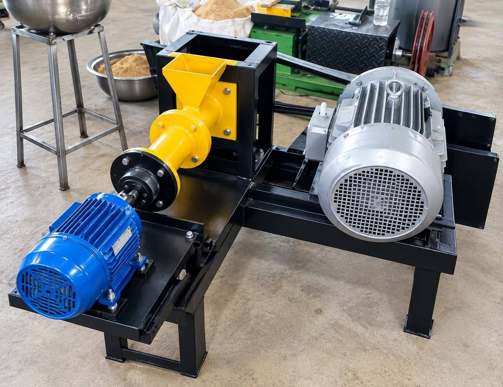
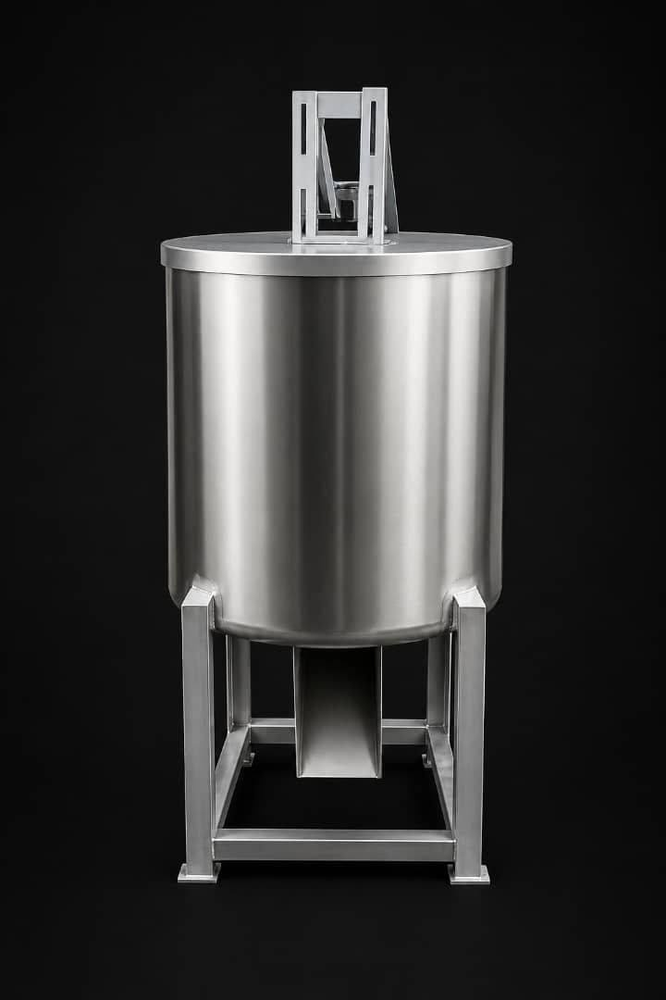
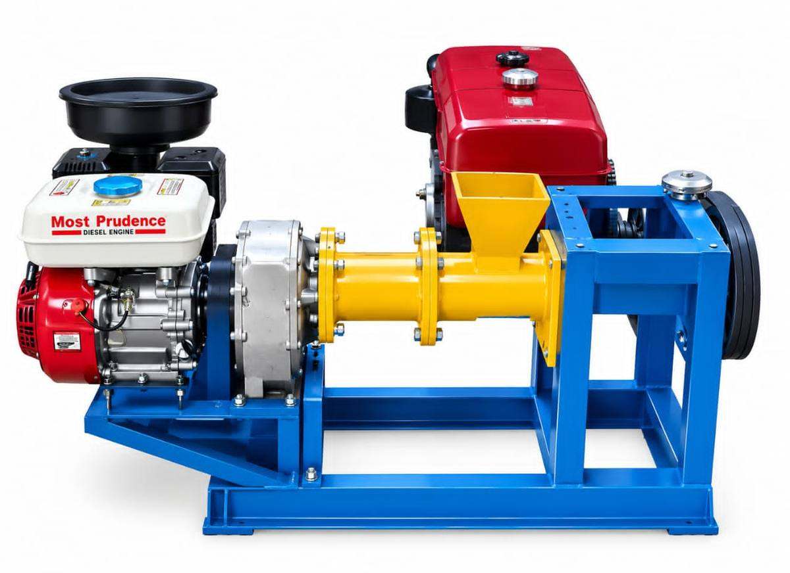
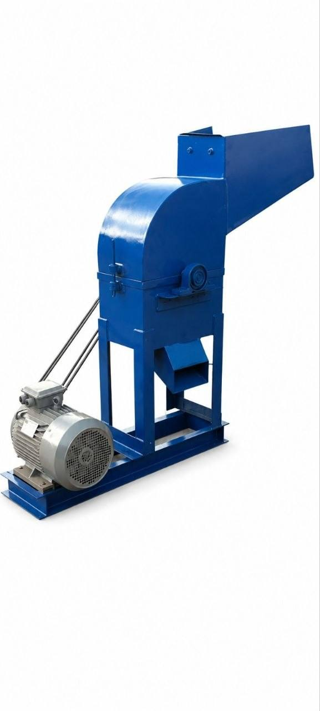
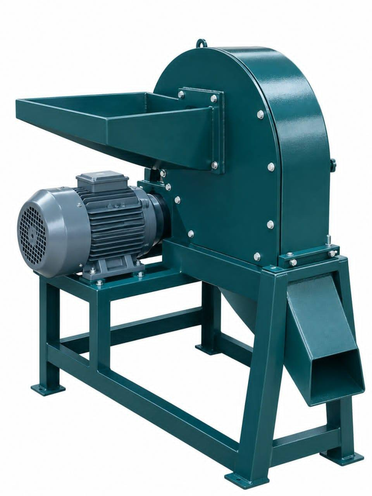
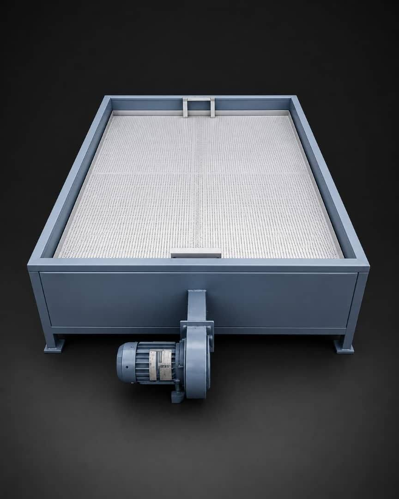
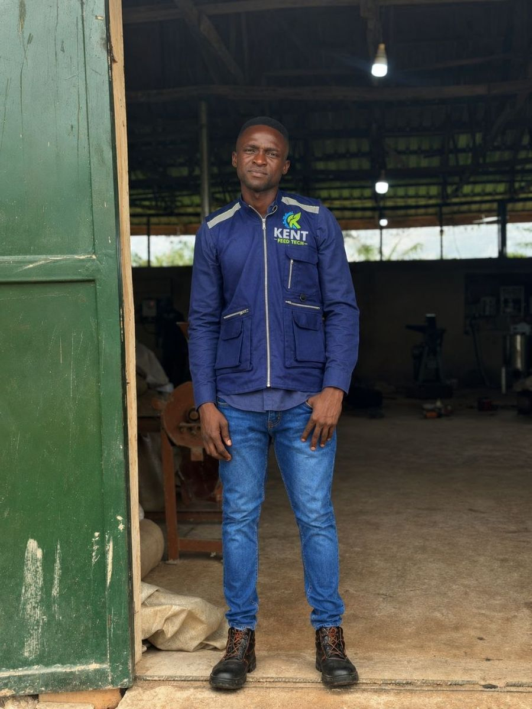
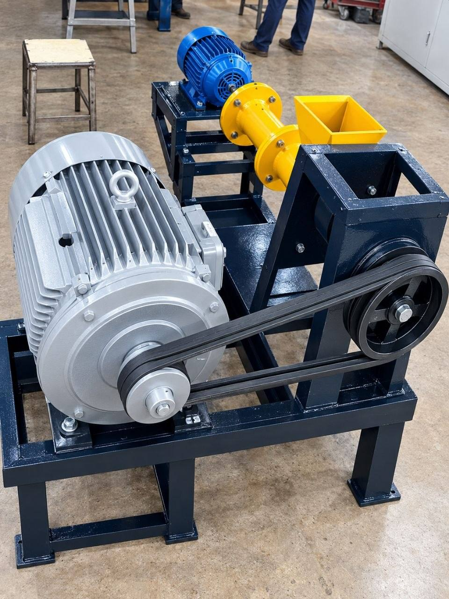

Kent Feedtech helps fish farmers and feed producers in Nigeria and across Africa reduce feed costs, improve feed quality, and produce more efficiently.
From feed formulation and raw material sourcing to proximate analysis, production training, machinery supply, installation, and after-sales support, we provide practical solutions for successful fish feed production.


Single & twin-screw extruders for floating and sinking fish feed, pet feed and pellets.
Hammer mills and pulverizers that reduce grains and raw materials to a consistent particle size.
Bed dryers that remove excess moisture from freshly extruded pellets before packaging.
CAC Registered — RC: 9873321
Kent Feedtech provides practical solutions that help fish farmers and feed producers reduce feed costs, improve feed quality, and produce more efficiently.
We combine fish feed formulation, nutrition, raw material sourcing, proximate analysis, production training, feed machinery, installation, and technical support to help farmers solve real feed production challenges.
Balanced and cost-effective feed formulations based on fish requirements and available ingredients.
Practical training on ingredient preparation, mixing, extrusion, drying, pellet production, and quality control.
Support with sourcing and selecting suitable feed ingredients for consistent and economical production.
Feed and ingredient analysis to help assess nutritional quality and support better formulation decisions.
Reliable equipment for grinding, mixing, extrusion, drying, and complete feed production lines.
Machine installation, commissioning, operator training, troubleshooting, maintenance, and after-sales support.
We don't just supply a machine or give you a feed formula. We look at your production needs and provide a practical solution that works for your farm or business.
Better Feed. Lower Costs. Better Production.
Nigerian-Made. Easy to Operate. Easy to Maintain.
Designed to help fish farmers and feed producers make quality floating fish feed efficiently and affordably. Unlike imported machines that often need specialized technicians or hard-to-source parts, this extruder is built for serviceability and local technical support — easy to operate, maintain and repair in the Nigerian fish farming environment.
Comes with interchangeable dies for different pellet sizes, so you can produce feed suited to different fish sizes and production needs. Die selection and operating conditions also affect pellet size and floatability.
| Model | Made in Nigeria (New) |
| Main Motor | 15 HP |
| Cutter Motor | 1 HP |
| Capacity | 50–60 kg/hour |
| Feed Type | Floating Fish Feed |
| Dies | 3mm, 4mm & 6mm |
| Operation | Easy to Operate |
| Country of Manufacture | Nigeria |

Reliable Fish Feed Production — Even Without Electricity
Built for fish farmers and feed producers working in areas with little or no access to electricity, unreliable power supply, or frequent outages. A diesel engine gives the extruder its own independent power source for producing floating fish feed, while the cutter runs on a small petrol engine for a simple, practical operating system.
Easy to operate, cost-effective and easy to maintain — a practical fit for rural farms and small-to-medium-scale fish feed production where grid power can't be relied on.
| Model | Made in Nigeria (New) |
| Power Source | Diesel Engine |
| Cutter Power | Petrol Engine |
| Feed Type | Floating Fish Feed |
| Dies | 3mm, 4mm & 6mm |
| Operation | Easy to Operate |
| Electricity Required | No |

Efficient Crushing for Better Feed Production
Crushes and reduces raw feed ingredients into smaller particles before mixing and further processing. It's an important first-stage machine in a feed production line, since the right particle size improves mixing, extrusion and overall feed quality.
Used for breaking down maize, bone meal, blood meal and other hard ingredients.
| Model | Made in Nigeria (New) |
| Machine Type | Hammer Mill |
| Motor Power | 15 HP (3 phase) |
| Power | Electricity |

Fine Grinding for Better Feed Processing & Digestibility
Grinds feed ingredients into a fine, uniform powder — an important machine for high-quality fish feed production. Good digestibility depends on ingredients being processed into a fine particle size.
The Pulverizer reduces ingredients into a fine powder, helping create a more consistent feed mixture and making the nutrients easier for fish to utilize.
| Model | Made in Nigeria (New) |
| Machine Type | Pulverizer |
| Motor Power | 10 HP (3 phase) |
| Power | Electricity |
Accurate and Uniform Addition of Water to Your Feed Mixture
Helps operators introduce and distribute water or suitable liquid ingredients evenly during feed preparation. Proper moisture management matters in extrusion, since the moisture level of the prepared mixture affects processing and the characteristics of the finished pellets.
Controlled liquid addition on a production line helps achieve more consistent processing.
| Model | Made in Nigeria (New) |
| Machine Type | Wet Mixer |
| Motor Power | Gear Motor (3 phase) |
| Power | Electricity |

Efficient Drying for Better Feed Storage and Handling
Designed to reduce the moisture content of freshly produced floating feed pellets after the extrusion process. Freshly extruded fish feed holds a considerable amount of moisture and needs proper drying before storage and packaging — the Bed Dryer uses controlled airflow and heat to remove that excess moisture and prepare the pellets for safe handling, packaging and storage.
Proper drying is an important part of fish feed production: excess moisture can reduce storage stability and create conditions that lead to spoilage. Reducing moisture to a suitable level helps improve shelf life and the overall quality of the finished feed.
| Model | Made in Nigeria (New) |
| Machine Type | Bed Dryer |
| Blower System | 2 Blower Motors |
| Motor Type | 3-Phase |
| Power Source | Electricity |
| Application | Drying of freshly extruded fish feed pellets |
A look at our machines running in the workshop.
Full Walkthrough — Machines & Clients

With years of hands-on experience in agriculture and fish feed production, Babatope Kehinde Joseph is the founder of Kent Feedtech and a Fish Feed Nutritionist passionate about helping farmers produce better feed and build more profitable businesses. His experience in the agricultural sector spans over 10 years.
Through partnerships with agro-processing factories and companies across Nigeria, he has gained firsthand understanding of the challenges faced by fish farmers, especially the cost and quality of fish feed.
This experience inspired the creation of Kent Feedtech — providing practical solutions through feed formulation, raw material sourcing, proximate analysis, production training, machinery supply, installation, and technical support.
Today, Kent Feedtech serves farmers and businesses across Northern, Southern, Eastern and Western Nigeria, with a growing vision to support fish farmers across Africa.
Talk to Me on WhatsApp →To help fish farmers produce better feed, reduce costs, improve efficiency, and build more profitable businesses — while providing practical solutions that make fish feed production easier, more efficient, and sustainable.
We provide practical support to help fish farmers and feed producers set up, operate, and get the best from their fish feed production equipment.
We help install and set up floating feed extruders and other fish feed production machines, including machines purchased from other suppliers.
Practical training on operating your equipment and producing consistent, quality fish feed.
Learn to formulate quality fish feed using suitable, locally available ingredients — even from home.
We inspect farms, identify production challenges, and give practical recommendations to improve your operation.
Our relationship doesn't end at delivery — support whenever you need help with operation, troubleshooting or production challenges.
Practical ways to source suitable ingredients and optimize your formulation to help control production costs.
Whether you purchase your machine from us or already own equipment from another supplier, we can assist with installation, operation, and fish feed production training.
All machines are fabricated strictly on order, according to customer requirements.

Motor size, hopper capacity and output are matched to your farm or mill, not sold as one-size-fits-all.
Belts, motors and wear parts are sourced within Nigeria, so replacements don't wait on an import.
We commission the machine where it will run and train your operators on start-up, shutdown and basic upkeep.
Don't see your question? Reach out and our engineers will answer directly.
Fill this in and it opens WhatsApp with your details already typed in — just hit send from there.
Fastest way to reach us for a quote.
For specs, drawings or bigger orders.
Contact us for machine quotations, installation, training, farm inspection, or consultation.